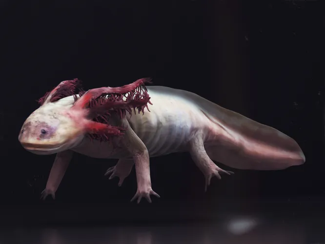

Что нужно для аксолотля в домашних условиях
Прежде чем приобрести аксолотля в качестве домашнего питомца, необходимо создать особые условия для его комфортного существования в неволе.
Аксолотли обитают в воде, поэтому для проживания этому необычному питомцу необходим просторный аквариум.
Оптимальные параметры искусственного водоема – 50 литров для одной особи и не менее 100 литров, если планируется заселить в аквариум пару неотенических личинок.
Грунт не является обязательным для оснащения аквариума с аксолотлем, но многие заводчики все же рекомендуют обустроить дно резервуара крупной галькой или речным песком. Размер фракции – не менее 3 см.
Следует избегать мелких камней, т. к. аквариумный питомец может их случайно проглотить и погибнуть. А вот внутренний декор весьма необходим этим экзотическим питомцам, за которым они смогут прятаться и отдыхать.
Какой декор подойдет: искусственные растения; широкие арки; гроты; глиняные горшочки; домики, башенки; кокосовая скорлупа; коряги, древесные корни (имитационные изделия). Важно: декоративные аксессуары не должны иметь острых углов и оснований, о которые аксолотль может пораниться. Кожа и жабры у водяного дракона очень нежные и чувствительные.
Интересные факты
1. Аксолотль — это личинка. Хотя аксолотль и животное, а если быть точнее амфибия, он является лишь личинкой некоторых видов амбистом.
2. Аксолотль достигает 30 см в длину. Согласитесь, это довольно крупное существо для личинки сухопутной амбистомы. Однако на этом сюрпризы не заканчиваются. Если задуматься о том, сколько лет аксолотль живет в неволе, то выяснится что личинка способна прожить порядка 10-15 лет, что удивительно долго для данного вида.
3. Имеет способности отращивать новые конечности. Такая регенерация маленькой личинки приковала к себе внимание учёных. Известно что в той или иной степени ей обладают все виды аксолотлей. При этом вне зависимости от того как выглядит аксолотль, он способен отрастить себе не только конечности, но и части тела, включая позвоночник и часть мозга.
4. Аксолотли — хищники. Их глаза расположены так, что добычу «снизу» аксолотль заметить не может.
5. Аксолотль — это «водяное чудище». По крайней мере если дословно переводить название личинки на русский язык. Впрочем, с этим не поспоришь: личинка с маленькими глазками и широким, «вечно улыбающимся» ртом — зрелище не для всех. Тем не менее, некоторые любители живой природы создают необходимые условия для аксолотлей, приобретают их и содержат в аквариуме. Из-за загрязнения водных ресурсов в естественной среде этих существ осталось очень мало.
